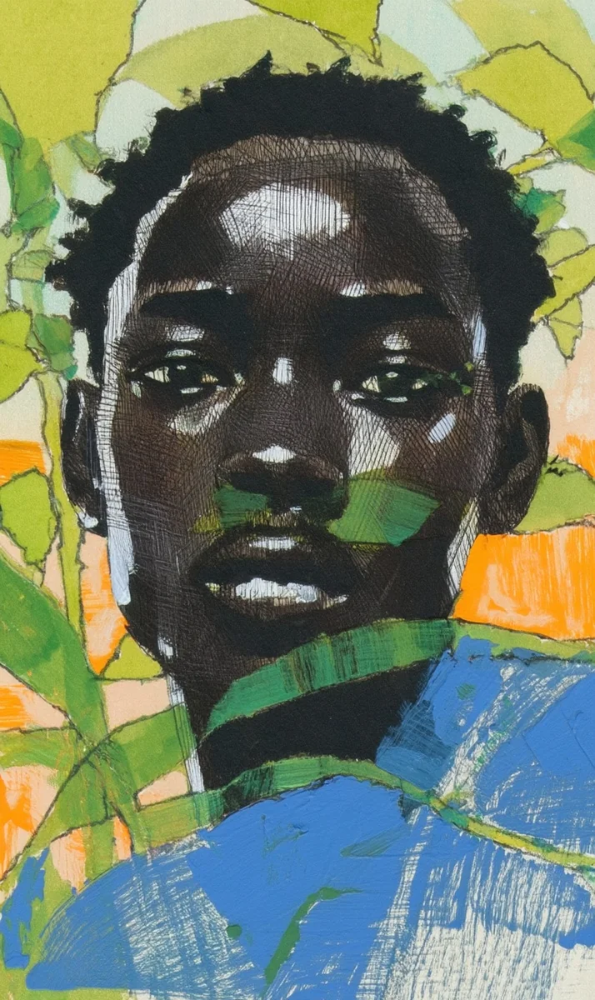

수요일 오후 세 시. 오민재는 계산대에 팔꿈치를 괴고 있었다. 손님이 없는 식물 가게는 조용했다. 그때 유리문이 열리며 낡은 수레 소리가 들렸다.
[Wednesday, 3 PM. Oh Minjae was leaning on his elbows at the counter. The plant shop without customers was quiet. Then the glass door opened and the sound of an old cart came through.]
늘 같은 할아버지였다. 매주 수요일, 같은 시간. 허리가 굽고 모자를 깊게 눌러 쓴 노인이 수레를 끌고 들어왔다.
[It was always the same old man. Every Wednesday, same time. A hunched elder with a cap pulled low came in dragging his cart.]
“할아버지, 오늘도 묘목이요?” 민재가 물었다.
[”Grandpa, seedlings again today?” Minjae asked.]
할아버지는 대답 대신 묘목 코너로 곧장 걸어갔다. 늘 그랬다. 가장 싼 묘목만 골라서 여섯 개, 일곱 개. 꽃이 피는 종류는 절대 고르지 않았다. 초록 잎만 무성한 것들.
[Instead of answering, the old man walked straight to the seedling corner. Always the same. He’d pick only the cheapest seedlings, six or seven. Never the flowering kinds. Only the ones thick with green leaves.]
민재는 처음에 신경 쓰지 않았다. 손님은 손님이니까. 그런데 석 달이 지나자 궁금해졌다. 작은 아파트에 산다고 했는데, 묘목을 어디에 그렇게 많이 두는 걸까.
[At first Minjae didn’t pay attention. A customer is a customer. But after three months, curiosity grew. He’d said he lived in a small apartment. Where was he putting all those seedlings?]
그날, 할아버지가 계산을 마치고 나가자 민재는 앞치마를 벗었다.
[That day, after the old man finished paying and left, Minjae took off his apron.]
“잠깐 나갔다 올게요.” 사장님에게 말하고 가게를 나섰다.
[”I’ll be right back,” he told the owner, and stepped outside.]
할아버지의 수레바퀴가 인도 위에서 덜컹거렸다. 두 블록을 지나고, 골목 하나를 꺾었다. 민재는 거리를 두고 따라갔다.
[The cart wheels rattled on the sidewalk. Past two blocks, around one alley. Minjae followed at a distance.]
할아버지가 멈춘 곳은 빈 공터였다. 몇 달 전까지 낡은 건물이 있던 자리. 그런데 그곳에 초록이 가득했다. 묘목들이 줄지어 자라고 있었다. 어떤 것은 이미 민재의 무릎 높이까지 올라와 있었다.
[Where the old man stopped was an empty lot. A place where an old building had stood until a few months ago. But the space was full of green. Seedlings grew in rows. Some had already reached Minjae’s knee height.]
할아버지는 수레에서 묘목을 하나씩 꺼내 흙 속에 심기 시작했다. 손이 느렸지만 정확했다.
[The old man took the seedlings out of the cart one by one and began planting them in the soil. His hands were slow but precise.]
민재는 한참 서 있었다. 말을 걸어야 할지 몰랐다. 결국 한 발짝 앞으로 나갔다.
[Minjae stood there for a while. He didn’t know if he should speak. Finally, he stepped forward.]
“도와드릴까요?”
[”Can I help you?”]
할아버지가 고개를 돌렸다. 놀라지 않았다.
[The old man turned his head. He wasn’t surprised.]
“손이 빠르면 좋겠구나. 오늘은 열두 개거든.”
[”Fast hands would be nice. I’ve got twelve today.”]
민재는 무릎을 꿇고 흙을 팠다. 손톱 사이로 까만 흙이 들어왔다. 가게에서 백 번 만졌던 묘목이 여기서는 다르게 느껴졌다. 뿌리를 흙에 넣는 순간, 묘목이 더 이상 상품이 아니었다.
[Minjae knelt and dug into the earth. Dark soil got under his fingernails. The seedlings he’d touched a hundred times at the shop felt different here. The moment he placed a root in the soil, it was no longer merchandise.]
“할아버지, 매주 이렇게 하세요?”
[”Grandpa, do you do this every week?”]
“빈 땅이 보이면 못 참아.” 할아버지가 웃었다. “아무도 안 돌보는 땅은 슬프잖아.”
[”I can’t help myself when I see empty land.” The old man smiled. “Land nobody cares for is sad, you know.”]
민재는 고개를 끄덕였다. 대답 대신 다음 묘목을 집었다.
[Minjae nodded. Instead of answering, he picked up the next seedling.]
수요일 저녁, 가게 문을 닫으며 민재는 진열대를 다시 봤다. 내일 아침 묘목을 더 주문해야겠다고 생각했다. 이번에는 자기 돈으로 여섯 개.
[Wednesday evening, closing the shop, Minjae looked at the display shelf again. He thought he should order more seedlings tomorrow morning. This time, six with his own money.]